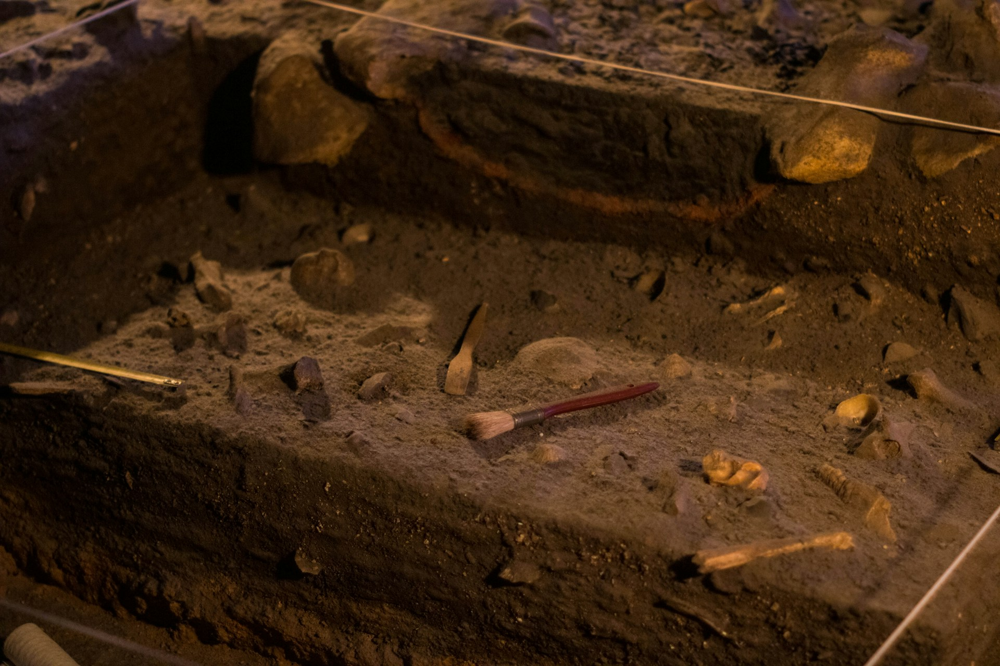
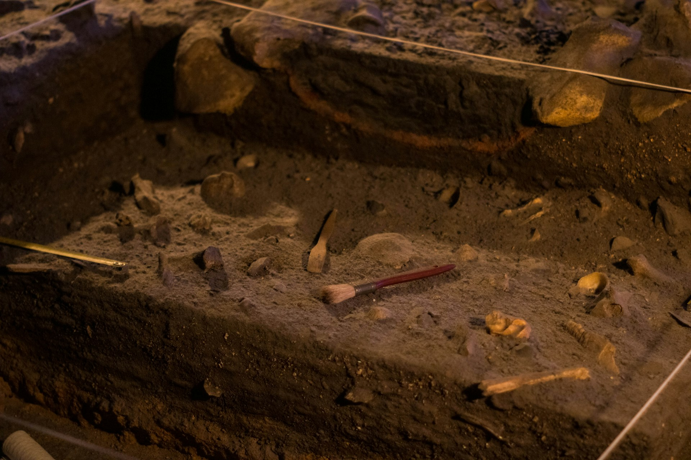

Santillana del Mar

Santillana del Mar, en Cantabria, es conocida como “la villa de las tres mentiras”: ni es santa, ni llana, ni tiene mar. Aun así, es uno de los pueblos más bonitos de España.
Su casco antiguo, perfectamente conservado, invita a pasear entre palacios y torres medievales. No te pierdas la Colegiata de Santa Juliana, joya del románico cántabro.
En los alrededores, la Cueva de Altamira guarda las pinturas rupestres más famosas de la península.

 
